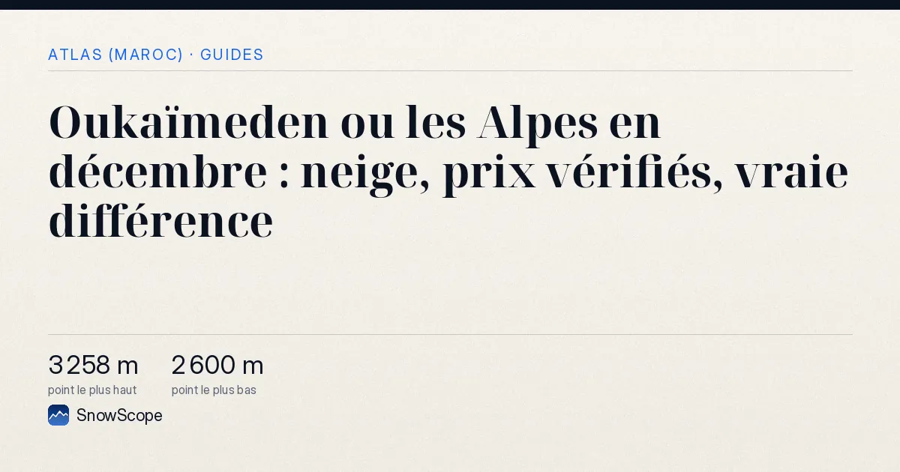

Oukaïmeden ou les Alpes en décembre : neige, prix vérifiés, vraie différence
Un week-end de ski en décembre à Oukaïmeden coûte-t-il une fraction d'un week-end dans les Alpes ? Nous aurions aimé l'affirmer avec des chiffres, mais nous n'avons trouvé aucun tarif officiel en ligne pour Oukaïmeden. Voici donc la comparaison honnête : la neige, mesurée sur 46 hivers, et les prix que l'on peut vérifier.
Consultez les prévisions neige en temps réel pour Oukaïmeden sur l'application SnowScopeHauteurs de neige, alertes poudreuse et carte 3D, gratuitement.
La neige : un monde d'écart
Le 15 décembre, dans un hiver typique, la mi-pente d'Oukaïmeden (2929 m) a 16 cm de neige, et seulement 11 % des hivers y dépassent 50 cm. À Val Thorens, la mi-pente (2498 m) a 89 cm, avec 50 cm ou plus dans 80 % des hivers, et le sommet 159 cm.
À Chamonix, sur le domaine des Grands Montets, la mi-pente (2001 m) a 65 cm et 63 % des hivers dépassent 50 cm ; le sommet, à 2768 m, a 157 cm. En décembre, l'Atlas joue dans une autre catégorie.

Les prix que l'on peut vérifier
Dans les Alpes, les pages officielles sont claires. Le forfait adulte 1 jour des 3 Vallées coûte 75,70 € en basse saison, du 5 au 18 décembre 2026, puis 84,20 € à partir du 19 décembre. Le forfait Mont-Blanc Unlimited, à Chamonix, coûte de 75 € à 104 € selon la date pendant la période de première neige, du 28 novembre au 18 décembre.
À Oukaïmeden, nous n'avons trouvé le 13 novembre 2026 aucun tarif officiel en ligne : forfaits et location se paient sur place. Nous ne publions donc pas de prix, plutôt que de recopier un chiffre non vérifié.
Ce qui fait vraiment la différence de budget
Pour un skieur qui vit à Marrakech, Oukaïmeden est à 50 km à vol d'oiseau, selon notre calcul : pas d'avion, pas de semaine de location. C'est là que se trouve l'économie, bien plus que dans le prix du forfait. Pour un skieur européen, le billet d'avion vers Marrakech remplace le trajet vers les Alpes, pour une neige bien moins sûre en décembre.
Notre verdict
En décembre, si vous voulez être sûr de skier, les Alpes en altitude, avant le 19 décembre pour profiter des prix de basse saison, restent le meilleur rapport neige-prix. Oukaïmeden est une excellente sortie à la journée depuis Marrakech après une chute de neige, et un vrai séjour de ski plutôt en février ou en mars, quand la mi-pente a 44 cm puis 53 cm dans un mois typique.
Conseils aux skieurs
- Alpes : skiez avant le 19 décembre pour le tarif de basse saison des 3 Vallées.
- Chamonix : le prix du Mont-Blanc Unlimited varie selon le jour, réservez tôt.
- Oukaïmeden : partez après une tempête et demandez les prix sur place avant de payer.
- Dans les deux cas, regardez notre carte de neige la semaine du départ.
Références et crédits
- Les 3 Vallées, adult 1-day pass 2026-27 (official) www.les3vallees.com/en/skipass/adult-1-day-solo-pass
- Mont-Blanc Unlimited, ticketing 2026-27 (official) www.montblancnaturalresort.com/en/ticketing/montblanc-unlimited
- Wikipedia, Oukaïmeden (read 13 November 2026) en.wikipedia.org/wiki/Ouka%C3%AFmeden
À propos de ces chiffres
Chiffres de neige : historique SnowScope, 46 hivers passés (1980-81 à 2025-26) aux altitudes indiquées (bas, mi-pente, sommet), une reconstitution de la neige passée pour une zone, corrigée de l'altitude (base ERA5-Land ; Snow_Hydro 1 km pour le Maroc), pas les bulletins de la station. Neige actuelle : la carte SnowScope. Remontées, pistes et altitudes : cartographie OpenSkiMap. Prix : les pages officielles listées ci-dessous, consultées le 13 novembre 2026 ; les prix dynamiques varient avec la date et la demande.
Citer ce bulletin
Pour la recherche, l'enseignement ou la presse : chiffres et graphiques réutilisables librement sous CC BY 4.0 avec cette citation.
SnowScope (2026), Oukaïmeden ou les Alpes en décembre : neige, prix vérifiés, vraie différence, https://snowscope.app/blog/fr/2026/11/oukaimeden-ou-alpes-week-end-ski-decembre-prix.html, consulté le 2026-11-14
SnowScope (Atlas Labs). (2026, November 14). Oukaïmeden ou les Alpes en décembre : neige, prix vérifiés, vraie différence. SnowScope snow reports. https://snowscope.app/blog/fr/2026/11/oukaimeden-ou-alpes-week-end-ski-decembre-prix.html
BibTeX
@misc{snowscope2026oukaimedenoualpesweekend,
author = {{SnowScope (Atlas Labs)}},
title = {Oukaïmeden ou les Alpes en décembre : neige, prix vérifiés, vraie différence},
year = {2026},
month = nov,
howpublished = {\url{https://snowscope.app/blog/fr/2026/11/oukaimeden-ou-alpes-week-end-ski-decembre-prix.html}},
note = {Published 2026-11-14 13:29 UTC; accessed 2026-11-14}
}· CC BY 4.0 · Méthodes, données et outils →
Oukaïmeden : neige et température selon l'altitude, cet hiver vs l'hiver dernier (outils) →
Suivre Oukaïmeden
Gratuit : un message quand la neige arrive, et la météo chaque matin.
Autres bulletins neige

Les Grands Montets ont enregistré 74 cm de neige fraîche ces dernières 72 heures, avec d'autres chutes prévues pour les jours à venir, selon notre modèle au 17 novembre 2026.

Prévision de 79 cm de neige nouvelle aux Grands Montets du 16–18 novembre, principalement au-dessus de 2 000 m d'altitude, selon le modèle de prévision du 15 novembre.

La hauteur de neige à Chamonix le 13 novembre 2026, altitude par altitude : rien au fond de la vallée, 1 cm à 2001 m, 12 cm en haut de Brévent-Flégère (2486 m), 5 à 24 cm en haut des Grands Montets (2768 m). Environ un mètre prévu en altitude cette semaine, de la pluie dans la vallée. L'épaisseur habituelle sur 46 hivers.